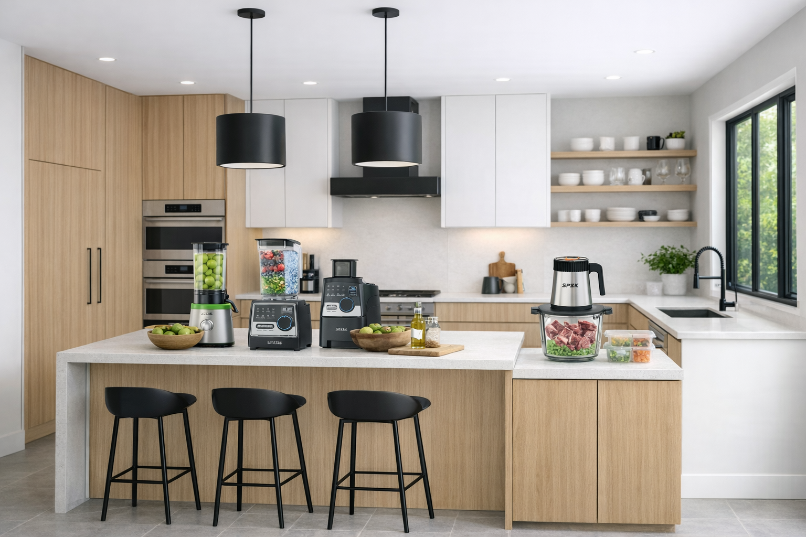

Cabinetry
Layout coordination, cabinet selection, removal and professional installation.
MODERN KITCHEN RENOVATION · METRO ATLANTA
Accent Property Services coordinates your renovation from cabinet selection and demolition through installation, countertops, backsplash and finishing details.
Request a Kitchen EstimateCOMPLETE KITCHEN PROJECTS
Layout coordination, cabinet selection, removal and professional installation.
Coordinate surfaces, measurements and installation as part of the renovation plan.
Coordinate lighting, outlets, switches and appliance-related electrical work when required.
Sink, faucet, disposal and appliance plumbing coordination around the new layout.
Finish the transformation with flooring, wall repair, trim and paint coordination.
One Accent point of contact to coordinate trades, materials, sequence and completion.
LOCAL CABINET MATERIAL SOURCE
Accent can source cabinetry through ATL Cabinetry in Peachtree Corners. We coordinate cabinet selection with the overall renovation so homeowners have one project plan from design through installation.
ATL Cabinetry is an independent supplier. Accent Property Services manages your renovation and installation; supplier availability and lead times are confirmed for each project.

A SIMPLE PROCESS
Tell us what you want to change, your timing and approximate budget.
Review layout, cabinetry, surfaces and project requirements.
Define scope, materials, coordination needs and project price.
Coordinate demolition, installation and finishing through completion.
START YOUR KITCHEN PROJECT
Send your ZIP code, approximate kitchen size, what you want changed, preferred timing and photos when available.